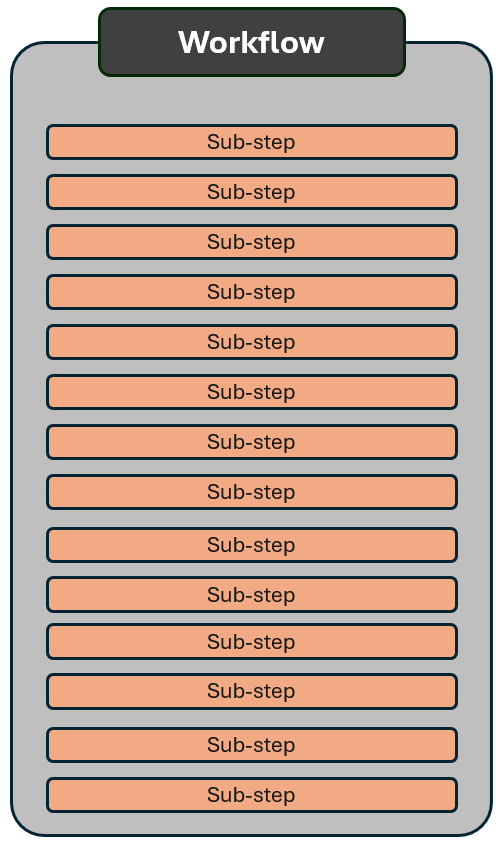
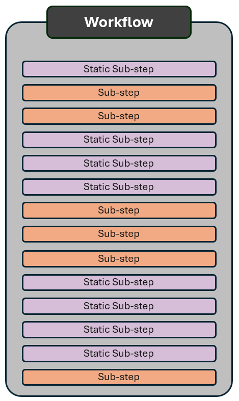
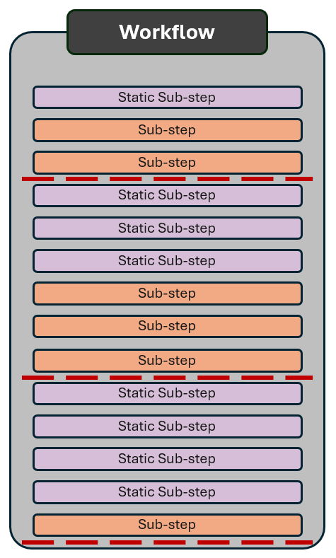

.png)
Human-in-the-Loop: Evaluating AI Outputs
Day 2 · Intro to Agentic AI at the WBG
Kristoffer Bjärkefur
Impact Analytics
5 October 2026
Agenda
- Why human review remains essential
- Techniques for evaluating AI-generated outputs
- Building a validation checklist
The Challenge is Not New
Human-in-the-loop review is not new
- The underlying reason for keeping a human in the loop is not new. We have always done “TTL-in-the-loop” or, more commonly, simply old-fashioned human review.
- The reason is that the human owner of a product is always responsible for it, regardless of whether it was created by:
- the human owner
- a more junior human
- a robot
- If the product is static, such as reports or code scripts, then the methods needed are not new.
- If the product is a robot making qualitative decisions for us, that is new and requires new methods.
Static Products vs. Decision-Making Products
This distinction is crucial to understanding what type of human-in-the-loop review is needed. Raise questions if it is not clear.
Static Tools
- Examples: reports, presentation decks, code, etc.
- Created by team members, vendors, or AI tools
- The product owner reviews the finalized output before the product is used or published. This is old-fashioned “human-in-the-loop” review.
Decision Making Products
- Examples: review bots and interactive bots such as chatbots
- Set up by team members, vendors, or AI tools
- Output is generated in real time. We can do a final review of the setup, but not of the output, unless we have a “human-in-the-loop” checkpoint.
Why are these distinctions important?
- Computers have been handling important tasks for decades. Such as financial transactions.
- No human reviews your internet banking transactions before they are completed.
So, what is different about AI-powered computers?
- AI is non-deterministic: it uses a random process, so its output can vary and may be generated with creativity.
- While banks develop code using AI today, no bank will let a non-deterministic AI handle your transaction.
- If AI handled your financial transactions, banks would need a human-in-the-loop checkpoint to review each transaction before any money was transferred.
Reduce the Need for Human-in-the-Loop
In Practice: AI-Only Workflows
- Many of you have brought complex workflows to this training, such as the multi-step process visualized on this slide.
- Today’s AI systems can most likely handle very complex workflows and generate results that are correct in most cases.
- Sometimes, “in most cases” is good enough; if not, we need to review the output.
- But if we need to review all the steps or the full final output, has the system saved us any time or effort?

Not everything has to involve non-deterministic AI
Before adding a human-in-the-loop system that will require many hours of manual work, can we reduce the need for it?
When a computer can adequately handle a task deterministically through code, it should; financial transactions are one example.
Break up your workflow into smaller workflows and ask yourself which parts can be handled deterministically with human-reviewed code.
- Reduces the need for human-in-the-loop review
- Increases the quality of your workflow’s output

But I can’t code!?
Maybe you cannot code, but the agent can do it for you!
Create the code with human review. Validate that it performs the tasks as intended.
How can I verify code if I can’t code?
- After the agent generates the code, ask it to explain what the code does. Use a different model to check that the explanation is consistent and accurate.
- Ask the agent to explain in a language you understand. Keep asking questions until you are confident.
- Ask the agent which edge cases might cause the code to fail, and address them if necessary.
- Give the agent test cases, including tricky ones that check how it handles edge cases. Do not use only easy or obvious examples; real-world examples are not always easy or obvious.
Add human-in-the-loop checkpoints
- Hopefully, you can now see natural locations for human checkpoints in your workflow.
- Make sure that both code and AI steps document what they have done; this will support human review.
- What is a human-in-the-loop checkpoint in practice? It depends on what you have used for your workflow.
- Skills: each skill includes all the steps between checkpoints. Do not run the next skill until after human review.
- Multi-agent workflow: do not approve the next agent taking over until after human review.
- Dashboard or monitoring system: review and then approve moving to the next step.

Removing the Human-in-the-Loop
When can I remove human checkpoints?
You probably have more intuition for this than you think. If you have ever managed a junior team member, you already have a sense of what to review and when to give them autonomy.
What level of accuracy do you need?
- Is a 20% error rate acceptable? It could be acceptable if the system is only performing an initial check.
- What would the consequences be if the AI makes an error?
- If you need perfect or near-perfect accuracy, human checkpoints are likely necessary, or at least take a lot of work to eliminate
Thoroughly Test and/or Set Up Review Agents
Can you thoroughly test the AI’s performance?
- Do you have hundreds of old cases that you know should pass or fail? If so, run them through your system and check its accuracy.
- Can you thoroughly evaluate the AI’s performance? Have 100 TTLs use the tool and provide feedback.
Review Agents
- Create an agent that generates a “confidence score”. Give it instructions about specific things that you and your team know to look for as warning signs.
- How does the AI workflow handle self-identified failures, and how will humans address them?
- Optional: Use a different model to review the output from the one that generated it.
AI-Enabled Research Bootcamp